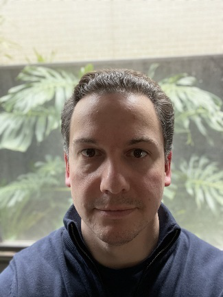

Adam Ballantine
Head of Research and Development, CEO
I am Adam Ballantine (s3916401), and I was born in Australia to two migrant parents. I am a member of A2 Group #10. In 2004 I graduated from Monash University with a Bachelor of Arts, majoring in Philosophy and Archaeology, after which I worked in the liquor industry until 2019. At this point I became a stay-at-home-parent to my (now) 3-year-old son. As I start to think about getting back into the workforce, my plan is to do it with new qualifications in IT and change industries, fulfilling a lifelong dream of learning programming. This dream began while playing video games as a child and was then nurtured when I was able to do basic programming on my graphical calculator in high school. My ideal job is one day being a Project Manager.